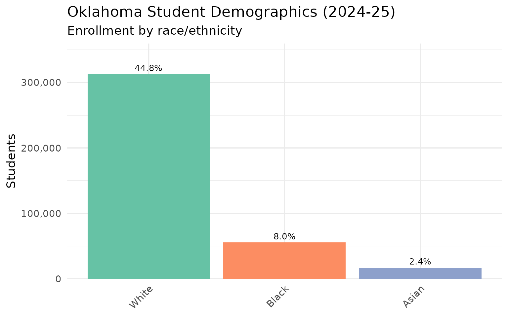

10 Insights from Oklahoma School Enrollment Data
Source:vignettes/enrollment_hooks.Rmd
enrollment_hooks.Rmd
library(okschooldata)
library(dplyr)
library(tidyr)
library(ggplot2)
theme_set(theme_minimal(base_size = 14))Oklahoma educates over 700,000 students across 540 school districts. This vignette explores key enrollment trends and patterns using data from the Oklahoma State Department of Education.
1. Statewide Enrollment Trend
Oklahoma’s enrollment has been growing since the COVID dip in 2021, adding roughly 25,000 students.
# Fetch statewide enrollment over time
enr_state <- fetch_enr_multi(2016:2025) |>
filter(is_state, subgroup == "total_enrollment", grade_level == "TOTAL") |>
select(end_year, n_students)
ggplot(enr_state, aes(x = end_year, y = n_students)) +
geom_line(linewidth = 1.2, color = "#841617") +
geom_point(size = 3, color = "#841617") +
scale_y_continuous(labels = scales::comma, limits = c(650000, NA)) +
scale_x_continuous(breaks = 2016:2025) +
labs(
title = "Oklahoma Statewide Enrollment",
subtitle = "Public school enrollment 2016-2025",
x = "School Year (End)",
y = "Students"
)
2. Top Districts Comparison
Oklahoma City and Tulsa are the largest districts, followed by suburban Edmond and Moore.
# Top 6 districts by enrollment
top_districts <- c("55I001", "72I001", "14I004", "14I002", "09I001", "31I001")
district_names <- c(
"55I001" = "Oklahoma City",
"72I001" = "Tulsa",
"14I004" = "Edmond",
"14I002" = "Moore",
"09I001" = "Broken Arrow",
"31I001" = "Lawton"
)
enr_top <- fetch_enr_multi(2016:2025) |>
filter(
district_id %in% top_districts,
is_district,
subgroup == "total_enrollment",
grade_level == "TOTAL"
) |>
mutate(district_label = district_names[district_id])
ggplot(enr_top, aes(x = end_year, y = n_students, color = district_label)) +
geom_line(linewidth = 1) +
geom_point(size = 2) +
scale_y_continuous(labels = scales::comma) +
scale_x_continuous(breaks = seq(2016, 2025, 2)) +
scale_color_brewer(palette = "Set2") +
labs(
title = "Oklahoma's Largest School Districts",
subtitle = "Enrollment trends 2016-2025",
x = "School Year (End)",
y = "Students",
color = "District"
) +
theme(legend.position = "bottom")
3. Demographic Breakdown
Oklahoma’s student population is diverse, with significant Native American, Hispanic, and multiracial populations.
# Statewide demographics for latest year
demo_subgroups <- c("white", "black", "hispanic", "asian",
"native_american", "pacific_islander", "multiracial")
enr_demo <- fetch_enr(2025) |>
filter(is_state, grade_level == "TOTAL", subgroup %in% demo_subgroups) |>
mutate(
subgroup_label = case_when(
subgroup == "white" ~ "White",
subgroup == "black" ~ "Black",
subgroup == "hispanic" ~ "Hispanic",
subgroup == "asian" ~ "Asian",
subgroup == "native_american" ~ "Native American",
subgroup == "pacific_islander" ~ "Pacific Islander",
subgroup == "multiracial" ~ "Two or More Races",
TRUE ~ subgroup
),
subgroup_label = factor(subgroup_label,
levels = c("White", "Hispanic", "Native American", "Black",
"Two or More Races", "Asian", "Pacific Islander"))
)
ggplot(enr_demo, aes(x = reorder(subgroup_label, -n_students), y = n_students, fill = subgroup_label)) +
geom_col(show.legend = FALSE) +
geom_text(aes(label = scales::percent(pct, accuracy = 0.1)), vjust = -0.5, size = 3.5) +
scale_y_continuous(labels = scales::comma, expand = expansion(mult = c(0, 0.15))) +
scale_fill_brewer(palette = "Set2") +
labs(
title = "Oklahoma Student Demographics (2024-25)",
subtitle = "Enrollment by race/ethnicity",
x = NULL,
y = "Students"
) +
theme(axis.text.x = element_text(angle = 45, hjust = 1))
4. Urban vs Suburban Growth
While Oklahoma City has lost students, suburban districts like Edmond and Moore have grown steadily.
# Compare OKC metro area trends
metro_districts <- c("55I001", "14I004", "14I002")
metro_names <- c(
"55I001" = "Oklahoma City",
"14I004" = "Edmond",
"14I002" = "Moore"
)
enr_metro <- fetch_enr_multi(2016:2025) |>
filter(
district_id %in% metro_districts,
is_district,
subgroup == "total_enrollment",
grade_level == "TOTAL"
) |>
mutate(district_label = metro_names[district_id]) |>
group_by(district_label) |>
mutate(
baseline = first(n_students),
change_pct = (n_students - baseline) / baseline * 100
) |>
ungroup()
ggplot(enr_metro, aes(x = end_year, y = change_pct, color = district_label)) +
geom_hline(yintercept = 0, linetype = "dashed", color = "gray50") +
geom_line(linewidth = 1) +
geom_point(size = 2) +
scale_x_continuous(breaks = seq(2016, 2025, 2)) +
scale_color_manual(values = c("Oklahoma City" = "#841617", "Edmond" = "#1a5276", "Moore" = "#148f77")) +
labs(
title = "Urban vs Suburban Enrollment Growth",
subtitle = "Percent change since 2016 in OKC metro area",
x = "School Year (End)",
y = "Percent Change from 2016",
color = "District"
) +
theme(legend.position = "bottom")
5. Grade Level Distribution
Kindergarten enrollment dropped sharply during COVID and is still recovering.
# Grade level enrollment over time
grade_levels <- c("K", "01", "05", "09", "12")
enr_grades <- fetch_enr_multi(2019:2025) |>
filter(
is_state,
subgroup == "total_enrollment",
grade_level %in% grade_levels
) |>
mutate(
grade_label = case_when(
grade_level == "K" ~ "Kindergarten",
grade_level == "01" ~ "1st Grade",
grade_level == "05" ~ "5th Grade",
grade_level == "09" ~ "9th Grade",
grade_level == "12" ~ "12th Grade"
),
grade_label = factor(grade_label,
levels = c("Kindergarten", "1st Grade", "5th Grade", "9th Grade", "12th Grade"))
) |>
group_by(grade_label) |>
mutate(
baseline = first(n_students),
index = n_students / baseline * 100
) |>
ungroup()
ggplot(enr_grades, aes(x = end_year, y = index, color = grade_label)) +
geom_hline(yintercept = 100, linetype = "dashed", color = "gray50") +
geom_line(linewidth = 1) +
geom_point(size = 2) +
scale_x_continuous(breaks = 2019:2025) +
scale_color_brewer(palette = "Set1") +
labs(
title = "Grade Level Enrollment Trends",
subtitle = "Index: 2019 = 100",
x = "School Year (End)",
y = "Index (2019 = 100)",
color = "Grade"
) +
theme(legend.position = "bottom")
6. District Size Distribution
Oklahoma has many small rural districts alongside large urban systems.
# District size distribution
enr_size <- fetch_enr(2025) |>
filter(is_district, subgroup == "total_enrollment", grade_level == "TOTAL") |>
mutate(
size_bucket = case_when(
n_students < 100 ~ "Under 100",
n_students < 500 ~ "100-499",
n_students < 1000 ~ "500-999",
n_students < 5000 ~ "1,000-4,999",
n_students < 10000 ~ "5,000-9,999",
TRUE ~ "10,000+"
),
size_bucket = factor(size_bucket,
levels = c("Under 100", "100-499", "500-999", "1,000-4,999", "5,000-9,999", "10,000+"))
) |>
count(size_bucket)
ggplot(enr_size, aes(x = size_bucket, y = n, fill = size_bucket)) +
geom_col(show.legend = FALSE) +
geom_text(aes(label = n), vjust = -0.5, size = 4) +
scale_y_continuous(expand = expansion(mult = c(0, 0.15))) +
scale_fill_brewer(palette = "Blues") +
labs(
title = "Oklahoma District Size Distribution",
subtitle = "Number of districts by enrollment size (2024-25)",
x = "District Size (Students)",
y = "Number of Districts"
)
Summary
Oklahoma’s school enrollment data reveals several key trends:
- Post-COVID recovery: Statewide enrollment has rebounded from the 2021 dip
- Urban-suburban shift: Oklahoma City is losing students while Edmond and Moore grow
- Diverse population: Native American students make up 13% of enrollment, one of the highest rates nationally
- Many small districts: Over 200 districts have fewer than 500 students
- Kindergarten impact: COVID hit early grades hardest, with ongoing effects
Use fetch_enr() and fetch_enr_multi() to
explore these patterns further in your own analysis.